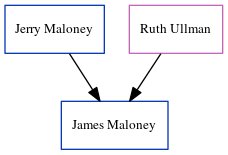

Mary Spratt (née Hughes) 1792 - c1837
[ Home ] | [ Calendar ] | [ Surnames Index ] | [ Errors ] | [ Family History ]The child of John Hughes and Elizabeth, Mary Hughes, the 3 times great-grandmother of Nigel Horne, was born in Kent, England in 17921 and married William Spratt (a labourer with whom she had 11 children: James, Sarah, William, Sarah, Matilda, Henry, Hope, Charity, Harriet, Mary and Esther) in St Nicholas-at-Wade, Kent, England on 8 Oct 18152 (KFHS CD 17/St. Nicholas At Wade, Kent, England).
During her life, she was living at her birthplace4.
She died c. 1837 in St Nicholas-at-Wade (youngest child (Esther Spratt) was 4 years old in 1841 census/St. Nicholas At Wade, Kent, England) and was buried there on 21 May 1837 (aged 39yrs)3.
Parents
Children
- James was born on 12 May 1816
- Sarah was born c. 1817
- William was born c. 1820
- Sarah was born c. 1821
- Matilda was born on 5 Jun 1825
- Henry was born c. 1827
- Hope was born c. 1830
- Charity was born c. 1830
- Harriet was born c. 1832
- Mary was born c. 1835
- Esther was born in 1836
Citations
- Kent, England, Tyler Index to Parish Registers, 1538-1874 Online publication - Provo, UT, USA: Ancestry.com Operations, Inc., 2010. This collection was indexed by Ancestry World Archives Project contributors.Original data - Frank Watt Tyler. The Tyler Collection. Canterbury, Kent, England: The Institute of Herald
- England, Select Marriages, 1538–1973 Ancestry.com Operations, Inc.
- Public Member Trees Online publication - Provo, UT, USA: The Generations Network, Inc., 2006.Original data - Family trees submitted by Ancestry members.Original data: Family trees submitted by Ancestry members.
- England, Select Marriages, 1538–1973 Ancestry.com Operations, Inc.
Media
England Marriages 1538-1973 - R_848220122/2
Family Tree
Map
Generated by ged2site. Last updated on Jul 3, 2024
Known Issues
Residence missing a date
Death date (abt 1837) has no citations
Contains a residence in Kent, England without a date